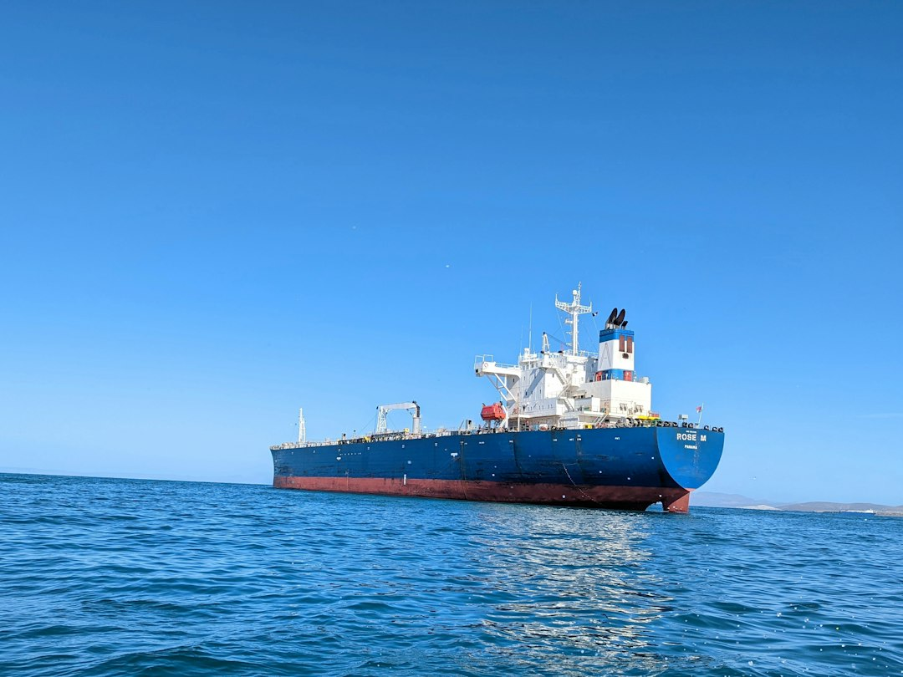

호르무즈 리스크, 韓·台 반도체 에너지 이중 노출 수치화

[자료사진] 기사와 무관한 이미지입니다.
한국은 전체 원유 수입의 약 72%를 중동에서 조달하며, 이 중 호르무즈 해협을 경유하는 비율이 90% 이상이다. 대만 역시 중동산 원유 의존도가 48% 수준이다. 반도체 팹 공정용 전력 단가는 전력믹스 중 LNG 비중이 높을수록 유가 충격에 직접 연동된다.
삼성전자 평택·화성 캠퍼스와 SK하이닉스 이천·청주 팹은 연간 전력 소비량이 합산 약 20TWh 수준으로 추정된다. 유가가 배럴당 10달러 상승할 때 한국 산업용 전기요금은 kWh당 약 2~3원 인상 압력을 받는다. 팹 수준에서는 연간 수백억 원 규모의 원가 변동이다.
물류 리스크도 있다. 한국 반도체 수출품의 일부는 중동 경유 항공·해상 루트를 사용한다. 이란이 호르무즈를 봉쇄하거나 통행 제한에 나설 경우 선적 우회(희망봉 루트)로 리드타임이 2~3주 추가된다. 현재 삼성전자의 중동·유럽향 메모리 출하 중 약 30%가 이 루트를 통과한다.
대만 TSMC는 에너지 자립도를 높이기 위해 2025년까지 사용 전력의 25%를 재생에너지로 조달하겠다는 RE100 목표를 공표했으나 실제 달성률은 14%에 머물고 있다. 한국 삼성전자의 국내 팹 재생에너지 비율은 10% 미만으로 더 낮다.
이 리스크는 단순 지정학 시나리오가 아니라 팹 원가 구조에 이미 내재된 취약성이다. 중동 긴장이 고조될 때마다 LNG 스팟가격이 연동 급등하고, 한국 전기요금 인상 압력이 6~12개월 시차로 산업용에 반영된다. 2022년 러-우 전쟁 당시 LNG 가격이 MMBtu당 8달러에서 70달러 이상으로 급등했을 때 한국 전기요금도 2023년에 kWh당 약 20원 이상 상승했다.
대만과 한국은 이 리스크를 공유하면서도 대응 속도가 다르다. TSMC는 에너지 공급 다변화(원전 재가동 지지, 재생에너지 PPA 확대)에 적극적인 반면, 삼성·SK하이닉스는 국내 전력 규제 틀에 묶여 자체 조달 여지가 제한적이다. 미국 IRA가 에너지 집약 산업에 전력 비용 보조를 제공한다는 점에서, 한국 팹의 해외 이전 유인이 이 리스크 때문에 추가로 강화된다.
원전 전력을 안정적으로 공급받는 제조 거점이 상대적 수혜를 본다. 한국수력원자력의 원전 추가 가동(신한울 3·4호기 인허가 진행 중)이 빠를수록 삼성·SK하이닉스의 팹 전력 원가 안정화 시나리오가 현실에 가까워진다.
중동 의존도가 낮은 에너지 믹스를 가진 미국·유럽 반도체 팹(인텔 오하이오, TSMC 아리조나)은 이 리스크에서 상대적으로 자유롭다. 미국 정부가 CHIPS Act 보조금으로 전력 인프라까지 지원하는 이유 중 하나다.
한국·대만 팹 의존 고객사(빅테크·스마트폰 OEM)는 호르무즈 봉쇄 시나리오에서 리드타임·단가 양면 충격을 받는다. 애플의 A·M 시리즈 칩 전량이 TSMC 생산인 점을 감안하면, 애플 공급망 전반이 에너지 리스크에 간접 노출된 구조다.
중동 LNG에 의존하는 한국 화학·정유 업계도 타격을 받지만, 반도체 팹은 연간 계약 전력 단가 구조로 인해 충격이 6~12개월 지연 반영되어 오히려 더 예측하기 어렵다는 점이 위험하다.
반도체 팹 투자자는 삼성전자·SK하이닉스의 분기 실적 발표에서 '에너지 비용' 항목 증감률을 별도 추적해야 한다. 원가 분석에서 에너지 비용이 2%p 이상 상승하면 영업이익률에 직접 영향을 미친다.
기업 구매 담당자라면 중동 긴장 지표(이란 혁명수비대 활동, 해협 통항 보험료 CII)를 반도체 조달 리드타임 리스크 모니터링에 포함시켜야 한다. 통상 봉쇄 우려가 고조되기 2~3주 전에 보험료가 먼저 뛴다.
실제 조달 현장에서는 — 중동 긴장이 불거질 때마다 항공 화물 운임이 먼저 움직이고, 이후 반도체 긴급 발주가 뒤따른다. 2024년 이란-이스라엘 교전 직후 인천 출발 항공 화물 운임이 kg당 1주일 만에 30% 급등한 사례가 있다. 납기 리스크를 줄이려면 중동 긴장 초기 신호 단계에서 안전재고를 4~6주분으로 늘리는 선제 조치가 실질적으로 유효하다.
이 포스팅은 쿠팡 파트너스 활동의 일환으로 수수료를 제공받습니다.